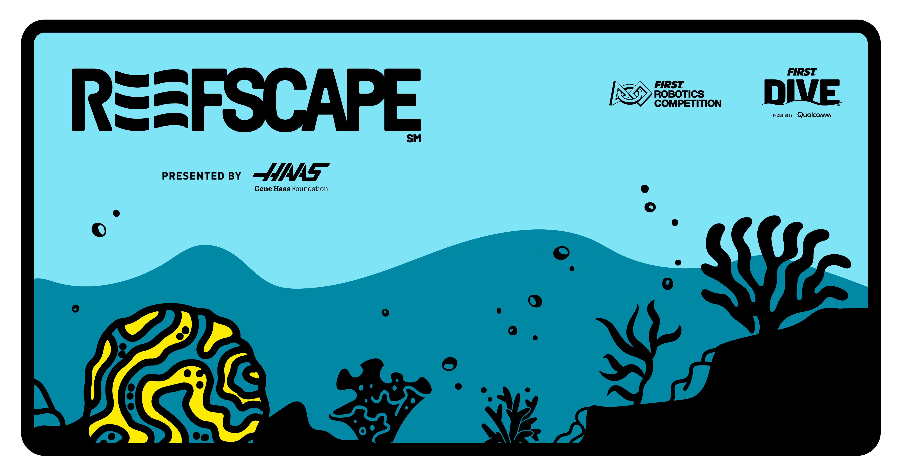

2025 Reefscape Simulation

CORAL and ALGAE on the Field
CORAL and ALGAE can be added to the field as game pieces:
SimulatedArena.getInstance().addGamePiece(new ReefscapeCoral(
// We must specify a heading since the coral is a tube
new Pose2d(2, 2, Rotation2d.fromDegrees(90))));
SimulatedArena.getInstance().addGamePiece(new ReefscapeAlgaeOnField(new Translation2d(2,2)));
You can visualize them by calling:
Logger.recordOutput("FieldSimulation/Algae",
SimulatedArena.getInstance().getGamePiecesArrayByType("Algae"));
Logger.recordOutput("FieldSimulation/Coral",
SimulatedArena.getInstance().getGamePiecesArrayByType("Coral"));
And display the data in AdvantageScope:


Detailed Documents on Game Pieces Simulation
The CORAL-ALGAE Stack
CORAL are staged on the field with ALGAE on top. You can place these stacks on the field:
Or reset the layout by performing a field reset:
Tip
When you display CORAL and ALGAE using the method specified above, the CORAL and ALGAE in the stacks will also be displayed.

Tip
Stacks will collapse and become a CORAL and ALGAE on the field if you hit them:

Interacting with CORAL and ALGAE
Users can use IntakeSimulation to simulate the interaction between robot intakes and the game pieces.
this.intakeSimulation = IntakeSimulation.OverTheBumperIntake(
// Specify the type of game pieces that the intake can collect
"Coral",
// Specify the drivetrain to which this intake is attached
driveTrainSimulation,
// Width of the intake
Meters.of(0.4),
// The extension length of the intake beyond the robot's frame (when activated)
Meters.of(0.2),
// The intake is mounted on the back side of the chassis
IntakeSimulation.IntakeSide.BACK,
// The intake can hold up to 1 note
1);
Detailed Documents on IntakeSimulation
Tip
- If your
IntakeSimulationis targeted to CORAL, it will also be able to grab the CORAL from the CORAL-ALGAE stack. And the ALGAE will fall to the ground as the CORAL disapear. - Vise versa, if your
IntakeSimulationis targeted to ALGAE, it will also be able to grab the ALGAE from the CORAL-ALGAE stack. And the CORAL will fall to the ground as the ALGAE disapear.
Launching ALGAE into the air
ALGAE can be launched into the air, and the simulation will detect if it reaches its target—the NET.
ReefscapeAlgaeOnFly.setHitNetCallBack(() -> System.out.println("ALGAE hits NET!"));
SimulatedArena.getInstance()
.addGamePieceProjectile(new ReefscapeAlgaeOnFly(
driveSimulation.getSimulatedDriveTrainPose().getTranslation(),
new Translation2d(),
driveSimulation.getDriveTrainSimulatedChassisSpeedsFieldRelative(),
driveSimulation.getSimulatedDriveTrainPose().getRotation(),
0.4, // initial height of the ball, in meters
9, // initial velocity, in m/s
Math.toRadians(70)) // shooter angle
.withProjectileTrajectoryDisplayCallBack(
(poses) -> Logger.recordOutput("successfulShotsTrajectory", poses.toArray(Pose3d[]::new)),
(poses) -> Logger.recordOutput("missedShotsTrajectory", poses.toArray(Pose3d[]::new))));

Scoring CORAL on REEF
You can eject a CORAL from your scoring mechanism during simulation. If a CORAL ejected into the air is in contact with a BRANCH at the correct angle, it will be attached to that branch. Maple-Sim will automatically detect the contact and simulate the scoring process (requires v0.3.3 or above).
SimulatedArena.getInstance()
.addGamePieceProjectile(new ReefscapeCoralOnFly(
// Obtain robot position from drive simulation
driveSimulation.getSimulatedDriveTrainPose().getTranslation(),
// The scoring mechanism is installed at (0.46, 0) (meters) on the robot
new Translation2d(0.35, 0),
// Obtain robot speed from drive simulation
driveSimulation.getDriveTrainSimulatedChassisSpeedsFieldRelative(),
// Obtain robot facing from drive simulation
driveSimulation.getSimulatedDriveTrainPose().getRotation(),
// The height at which the coral is ejected
Meters.of(1.28),
// The initial speed of the coral
MetersPerSecond.of(2),
// The coral is ejected at a 35-degree slope
Degrees.of(-35)));
SimulatedArena.getInstance()
.addGamePieceProjectile(new ReefscapeCoralOnFly(
// Obtain robot position from drive simulation
driveSimulation.getSimulatedDriveTrainPose().getTranslation(),
// The scoring mechanism is installed at (0.46, 0) (meters) on the robot
new Translation2d(0.46, 0),
// Obtain robot speed from drive simulation
driveSimulation.getDriveTrainSimulatedChassisSpeedsFieldRelative(),
// Obtain robot facing from drive simulation
driveSimulation.getSimulatedDriveTrainPose().getRotation(),
// The height at which the coral is ejected
Meters.of(2.1),
// The initial speed of the coral
MetersPerSecond.of(1),
// The coral is ejected vertically downwards
Degrees.of(-90)));
Info
CORALs that miss the target will be dropped on the floor:

Info
CORALs that fall on the TROUGH will remain on the trough:

Info
To score a CORAL on a BRANCH, it must:
- Be in contact with the BRANCH.
- Be aligned with the direction of the BRANCH.
- Be moving in the correct direction (i.e., if the coral is moving upwards, it cannot score).


Configuring Angle Tolerance for Scoring
By default, CORAL must be aligned within 10 degrees of the BRANCH direction to score. You can adjust this tolerance to make scoring easier or harder:
// Make scoring more forgiving (allow 15 degrees of misalignment)
ReefscapeReefBranch.setAngleTolerance(Degrees.of(15));
// Make scoring more strict (allow only 5 degrees of misalignment)
ReefscapeReefBranch.setAngleTolerance(Degrees.of(5));
Tip
- You can call
setAngleTolerance()at any time, even after the arena has been created - The change applies immediately to all existing branches
- This is useful for testing your scoring mechanism with different difficulty levels
Use Case: Testing Scoring Consistency
// During testing, use a more forgiving tolerance
ReefscapeReefBranch.setAngleTolerance(Degrees.of(20));
// Once your mechanism is reliable, test with competition tolerance
ReefscapeReefBranch.setAngleTolerance(Degrees.of(10));
// For extra challenge, test with stricter tolerance
ReefscapeReefBranch.setAngleTolerance(Degrees.of(5));
To obtain the amount of corals scored on each branch, use:
Optional<ReefscapeReefSimulation> reefSimulation = ReefscapeReefSimulation.getInstance();
int amountOfCoralsOnBranch_G_L4 = 0;
if (reefSimulation.isPresent()) {
amountOfCoralsOnBranch_G_L4 = reefSimulation.get().getBranches()
[6] // branch G
[3]; // L4
}
See the javadocs for more info.